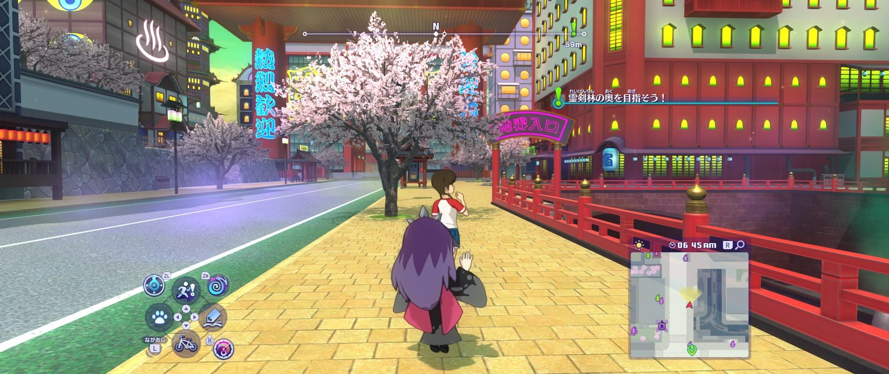
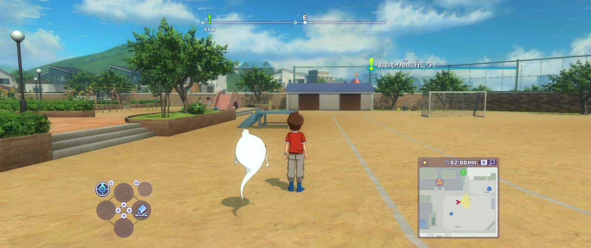
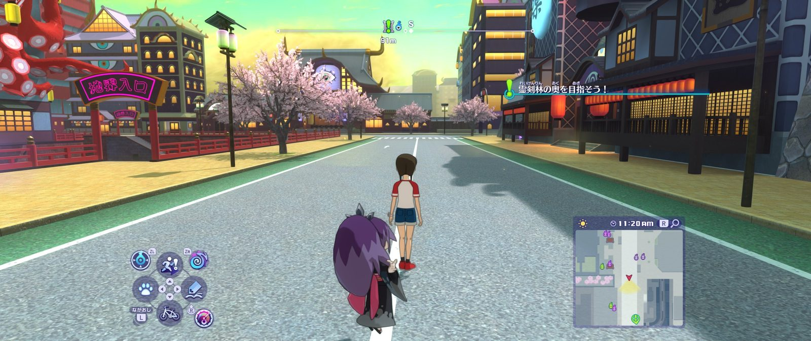

Up to 4K, with TAA or SMAA Yo-kai Watch 4 Recomp Developed by ILFforeverWelcome
Setup takes 10–15 minutes.



Up to 4K, with TAA or SMAA Yo-kai Watch 4 Recomp Developed by ILFforeverSetup takes 10–15 minutes.
Base game + update 2.2.0. Select your local game files.
A few seconds. Nothing is changed.
Show details says why. Build again keeps the finished steps.
The game doesn't startUpdate your graphics driver (Vulkan 1.3 is needed), then check the logs.
DLSS is greyed outDLSS needs an NVIDIA RTX card. FSR works on any card.
Yo-kai Watch © LEVEL-5. Not affiliated with LEVEL-5 or Nintendo.
This happens once. You can minimise this window.